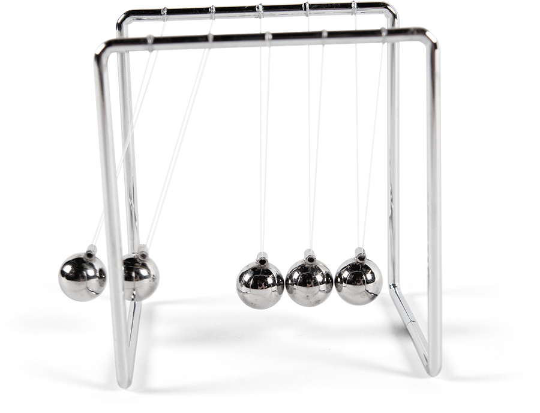
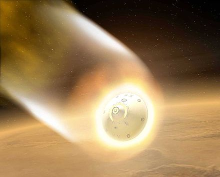
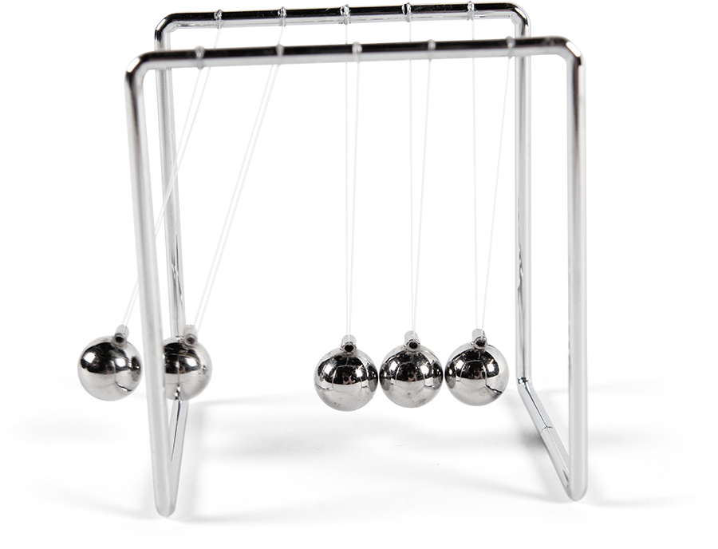
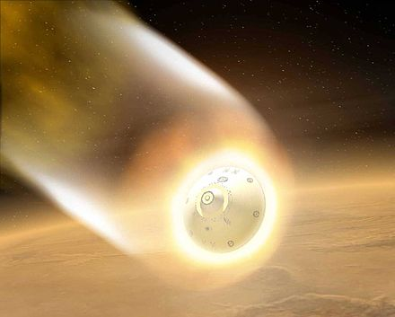

>

>
Although there is often a misconception of how spacecraft get into
space and go to different celestial bodies, the logic behind movement
and energy are all referenced from Newton’s law of motion. The very
first step is launching the spacecraft to space, and this is an example
of Newton’s third law of motion. When it releases fuel and energy from
its engine, the energy pushes back from the ground to propel the rocket
upwards. Once the mass passes through the atmosphere, there are no external
forces acting on the rocket, since space is merely a vacuum. There are
no air resistance, gravity, or applied force in its current state, so
it travels in constant speed since all of the forces are at equilibrium.
It stays in the same speed and direction, or velocity. This is showcasing
Newton’s first law, that an object in motion stays in motion unless acted
upon by an unbalanced force. Then, when the spacecrafts leave Earth’s
atmosphere, they are in Earth’s orbit around the Sun. Space programs plan
beforehand the time their craft would leave Earth, as it is targeting a
moving body. To do this, they take into consideration the speed and length
of Earth as well as the targeted body’s orbit. This exemplifies the force
of gravity and its impact in the velocity of spacecrafts, as orbits play a
major role in the spacecrafts’ movement.
Changing paths to different orbits require the same force that was needed
for the launching of the spacecraft. To perform this, space programs fire
their engine to the opposite direction of where their targeted path is, so
that the energy released in the opposite direction creates enough result
force. Finally, if the mission was set for a celestial body with an atmosphere,
it would experience two forces. Atmospheric drag and gravity. As the spacecraft
enters the atmosphere, aerodynamic heating occurs, which creates intense heat.
By the force of gravity, the spacecraft experiences kinetic energy as it goes
through the atmosphere. However, spacecraft designs have made them capable
of entering atmospheres, through a blunt shape. The shape is used to gain
more drag or friction with the atmosphere, in which creates less heat, since
heat and drag are both inversely proportional. Then, the drag also contributes
to decreased speed of the spacecraft, which allows rockets and parachute to
function for the landing.
Physics is an area of study that is related to energy and matter,
and it highlights the fundamentals of movement in space and on Earth.
Energy and movement behaves differently in space compared to that
of Earth, in which includes the pattern of how light, sound, and
objects travel. Space program greatly rely on these concepts to
launch spacecrafts to different celestial bodies in the Solar System.
Of the well known laws of physics, Newton’s law of physics are
implemented more often than others in space physics.
Newton’s First Law: An object at rest stays at rest and an object
in motion stays in motion with the same speed and in the same
direction unless acted upon by an unbalanced force.
Newton’s Second Law: The acceleration of an object as produced
by a net force is directly proportional to the magnitude of the
net force, in the same direction as the net force, and inversely
proportional to the mass of the object.
Newton’s Third Law: For every action, there is an equal and
opposite reaction.
Insert Text Here